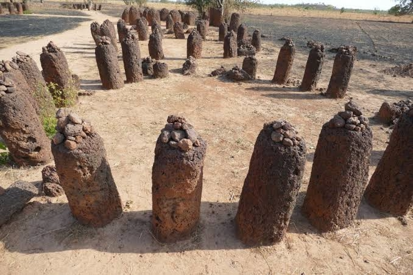
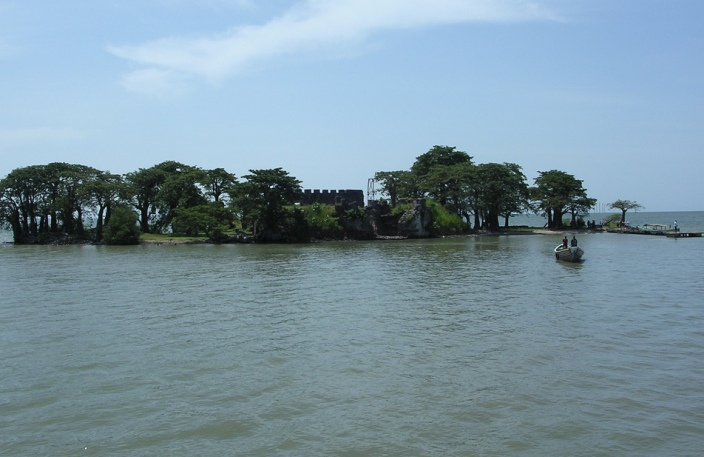
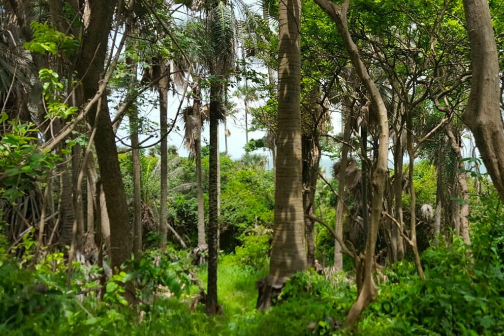
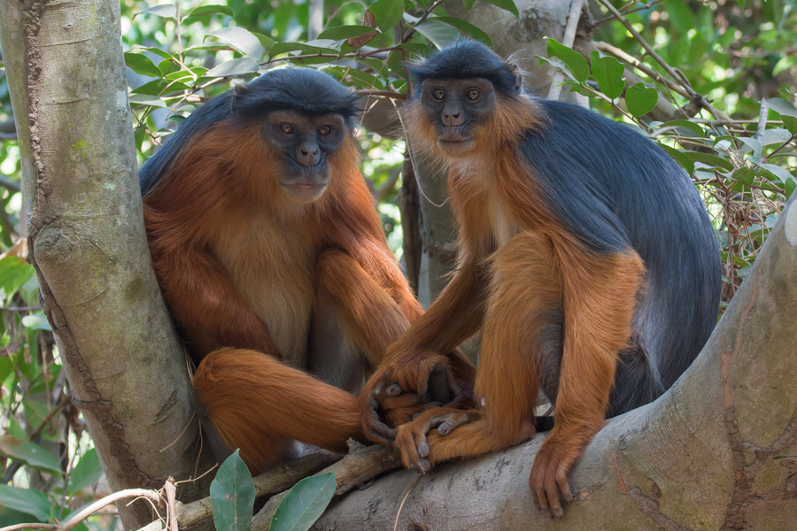
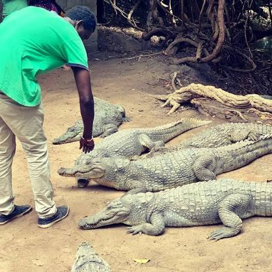
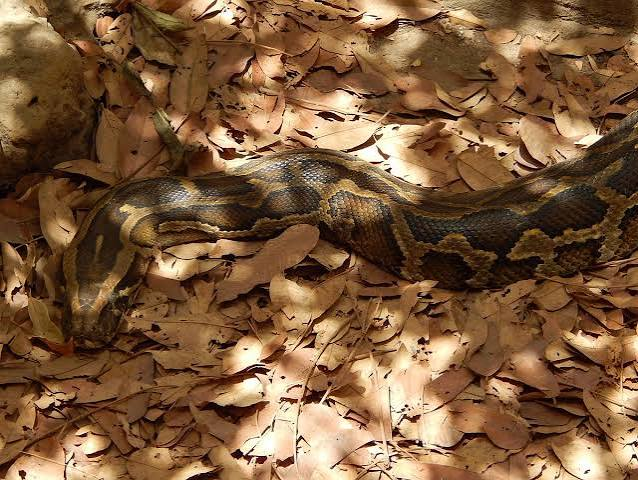

Stone Circle
Rings of ancient stone pillars, raised over a thousand years ago and listed by UNESCO. It is a long drive inland, so plan a full day or an overnight trip.
The Gambia nature reserves, sacred sites and historic landmarks each tell part of the countrys story. This guide covers what you will see at each place and what to expect when visit.

Rings of ancient stone pillars, raised over a thousand years ago and listed by UNESCO. It is a long drive inland, so plan a full day or an overnight trip.

A small island in the River Gambia and UNESCO World Heritage Site. You reach it by boat, and it pairs well with a visit to nearby Juffureh..

Bijilo park is a quiet forest walk next to the coast hotels where animals come right up to the path. Keep snacks in your bag. Feeding the them makes them more friendly.

The Gambia oldest nature reserve, with shady trails, birdlife and red colobus monkeys high in the trees. Go early in the morning, when it is cooler and the animals are most active..

A sacred pool in Bakau where locals come to pray for blessings, and where calm crocodiles rest on the bank. Follow the guides lead. This is a spiritual place first and an attraction second.

A close look at the countrys snakes, lizards and other reptiles, with guides explaining which ones you had actually meet and which are harmless. A good stop if you are curious or a little nervous about wildlife.